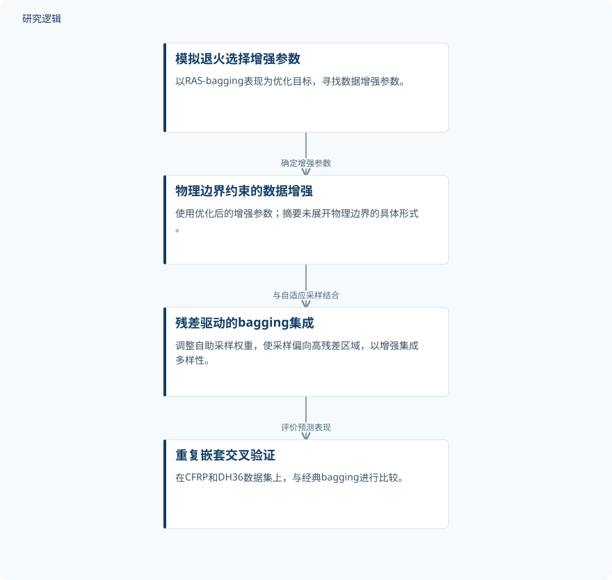

摘要解读
基于优化数据增强与自适应采样的疲劳寿命预测方法
A Fatigue Life Prediction Method Based on Optimized Data Augmentation Algorithm and Adaptive Sampling Model
解读更新 2026-10-21 10:33 · 依据公开摘要整理，未核验全文细节
疲劳寿命数据稀缺时，如何让机器学习预测更准确、更稳定？这项研究将模拟退火引导的数据增强与残差驱动的集成采样结合，值得关注的是二者如何配合，以及结果距离可靠性应用还有哪些验证边界。
文章目录
少样本是疲劳寿命建模的现实约束
摘要指出，机器学习疲劳寿命预测的数据集通常少于50个样本，给预测建模带来明显挑战。这是作者描述的领域背景，不能据此认定本文各数据集的具体样本量。研究关注的是：在数据稀缺条件下，能否通过数据增强与集成采样的协同改善预测表现。
让增强参数与残差驱动采样协同工作
作者提出一个整合框架：模拟退火（SA）负责寻找使残差驱动自适应采样（RAS）bagging表现最优的数据增强参数；RAS则依据残差调整自助采样权重，使采样偏向高残差区域，以增强集成多样性。摘要同时强调，数据增强受到物理边界约束，但没有展开边界的具体形式。
评价采用十折、30次重复的嵌套交叉验证，并使用相同数据划分进行比较。摘要明确报告的比较对象是经典bagging，所涉及的数据集为CFRP和DH36。
依据摘要整理的增强与集成预测流程


仅概括摘要明确描述的方法关系与评价环节，不表示具体实现配置，也不是论文原图。
下载 SVG图示关系说明
实线表示相邻阶段的信息流，虚线表示跨阶段联系或反馈。
模拟退火选择增强参数 → 物理边界约束的数据增强：确定增强参数；物理边界约束的数据增强 → 残差驱动的bagging集成：与自适应采样结合；残差驱动的bagging集成 → 重复嵌套交叉验证：评价预测表现
误差下降，并报告了预测区间覆盖率
在CFRP和DH36数据集上，相比经典bagging，平均绝对误差（MAE）分别降低85.8%和64.3%。摘要还报告Wilcoxon符号秩检验显示显著改善，Cliff’s效应量较大；但所提供文本中的具体检验数值、部分指标名称及均值存在缺失，不能据此补全。
模型构建的80%共形预测区间取得84%的经验覆盖率，并提供保守的寿命下界估计，用于支持面向可靠性的决策。作者据此认为，该组合框架在所研究数据集内缓解了数据稀缺问题；这一结论仍应与更广泛的工程适用性区分。
数据集内改善不等于工程场景已验证
仅凭摘要，无法判断各数据集的原始样本量、增强样本与原始样本的比例、具体学习器配置，以及增强和参数优化在嵌套验证中的执行细节。摘要也不足以判断各模块的独立贡献、其他基线的比较范围，以及区间覆盖率在不同条件下是否稳定。
作者明确提出，扩展到汽车可靠性评估和结构健康监测之前，仍需更大规模独立队列、现场数据及在线学习场景的验证。这些应用属于待验证的延伸方向，而不是摘要已经证明的部署效果。
阅读启发：同时关注误差、边界与寿命下界
阅读启发：对于疲劳可靠性与智能运维，值得进一步阅读的不是单一误差降幅，而是物理边界如何约束增强、残差加权如何影响预测，以及寿命下界如何支持决策。还应核对验证划分与参数选择的关系，避免把增强数据带来的改善误读为独立实测证据的增加。
以上为本站阅读启发与建议，不是论文已验证的结论。